應用程式名稱： OffLink
目標使用者： 希望在同一 WiFi 網路內進行群組語音通話的使用者
建立日期： 2026年3月9日
最後更新： 2026年4月11日
OffLink 是一款無需網際網路，在同一 WiFi / 熱點分享環境內即可進行群組語音通話的應用程式。 透過基於 WebRTC 的 P2P 通訊實現低延遲語音通話。
使用情境範例：
應用程式啟動後的首頁畫面。透過底部的三個按鈕開始操作。
OffLink 在 WiFi 區域網路模式下運作。 所有人連線到同一 WiFi 網路（家用 WiFi、行動熱點、隨身 WiFi 等）後， 由主機裝置啟動訊號伺服器，在同一網路內的裝置之間進行語音通話。
重點： 無需網際網路連線。只要路由器或熱點裝置正在發送訊號，就可以進行通話。
| 角色 | 支援裝置 | 說明 |
|---|---|---|
| 主機（通話發起者） | Android / iPhone | 啟動訊號伺服器並管理通話的裝置 |
| 訪客（參與者） | Android / iPhone | 加入主機建立的通話的裝置 |
注意： 所有參與者必須連線到同一 WiFi 網路。
應用程式在首次啟動時會一次性要求以下權限。 如果未全部允許，部分功能將無法使用。
| 權限 | 用途 | 拒絕後的影響 |
|---|---|---|
| 麥克風 | 語音通話 | 無法通話 |
| 相機 | QR 碼掃描 | 無法透過 QR 註冊群組 |
| 附近裝置（WiFi） ※Android | WiFi 網路偵測·主機搜尋 | 無法偵測主機 |
| 位置資訊 ※Android | WiFi 掃描（Android 系統要求） | 無法取得 WiFi SSID |
| Bluetooth ※Android | Bluetooth 耳機連線 | 無法使用耳機 |
| 通知 ※Android | 通話邀請通知 | 背景執行時無法收到通知 |
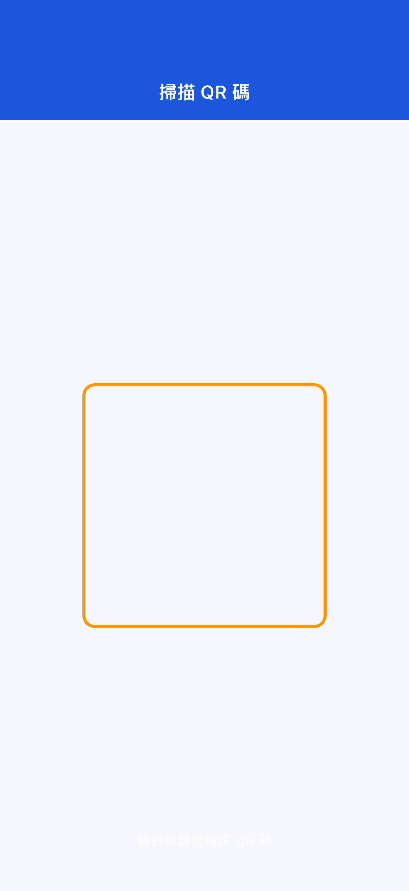
誤拒權限的情況：
應用程式會彈出引導您前往設定頁面的對話框。請前往裝置的設定 → 應用程式 → OffLink變更權限。
（家用 WiFi、熱點分享、隨身 WiFi 等）
無需事先建立群組，即可與連線到同一 WiFi 的成員立即開始通話。
Step 1： 所有人連線到同一 WiFi 網路。
Step 2： 點擊首頁的「立即通話」（綠色按鈕）。
Step 3： 彈出使用者名稱輸入對話框。輸入通話中顯示給其他成員看的名稱。
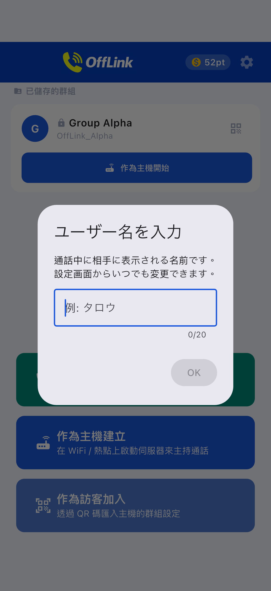
Step 4： 在點數消耗頁面選擇層級並開始通話（→ 參見 3-5. 點數系統）。
Step 5： 同一 WiFi 網路內的其他成員會自動收到通話邀請通知。成員加入後通話即開始。
如果已有主機：
同一網路內已有主機時，您可以選擇加入現有通話或開始新的通話。
如果經常和相同成員通話，建立並儲存群組會更方便。
Step 1： 點擊首頁的「作為主機建立」（藍色按鈕）。
Step 2： 在群組建立頁面輸入群組名稱和密碼（選填），然後點擊「建立」。

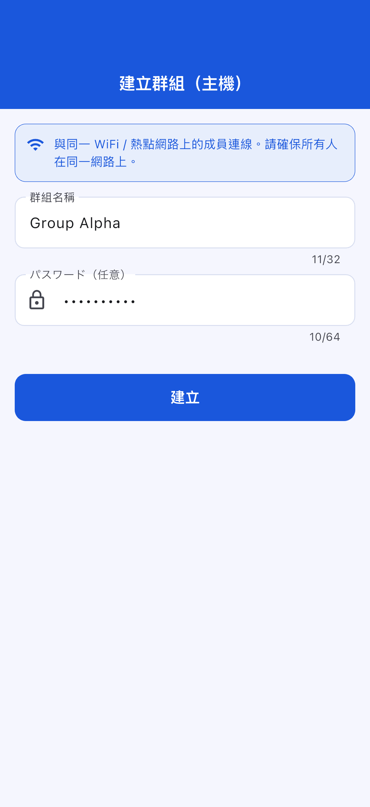
小提示：
- 群組名稱請使用成員容易辨識的名字（例如：騎行A組、倉庫聯絡）
- 設定密碼可防止陌生人加入（建議設定）
Step 3： 選擇建立後的動作。將彈出底部選單。
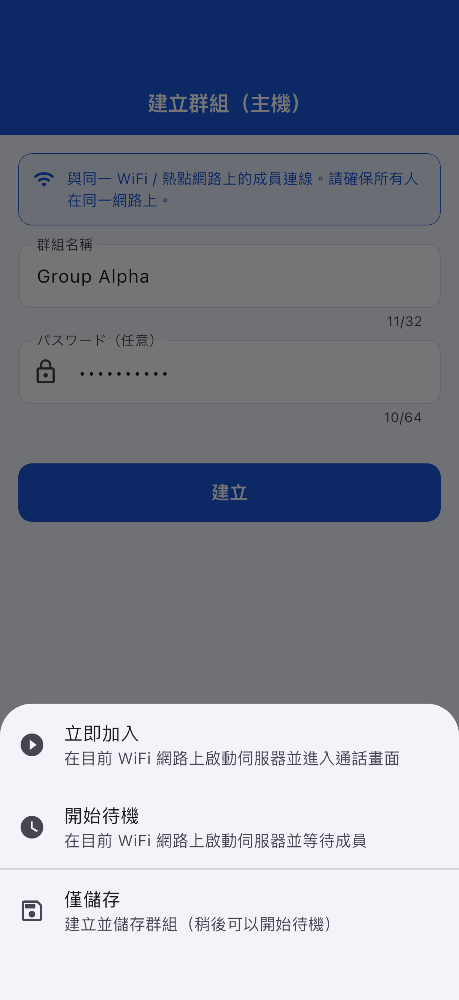
| 動作 | 說明 |
|---|---|
| 立即加入 | 在 WiFi 區域網路上啟動伺服器，直接進入通話頁面 |
| 開始待命 | 啟動伺服器等待成員連線 |
| 僅儲存 | 僅儲存群組資訊（之後可隨時啟動） |
成員（訪客）從主機取得群組資訊後進行參加註冊。
Step 1： 點擊首頁的「作為訪客加入」（淺藍色按鈕）。
Step 2： 選擇加入方式。有三種方法。
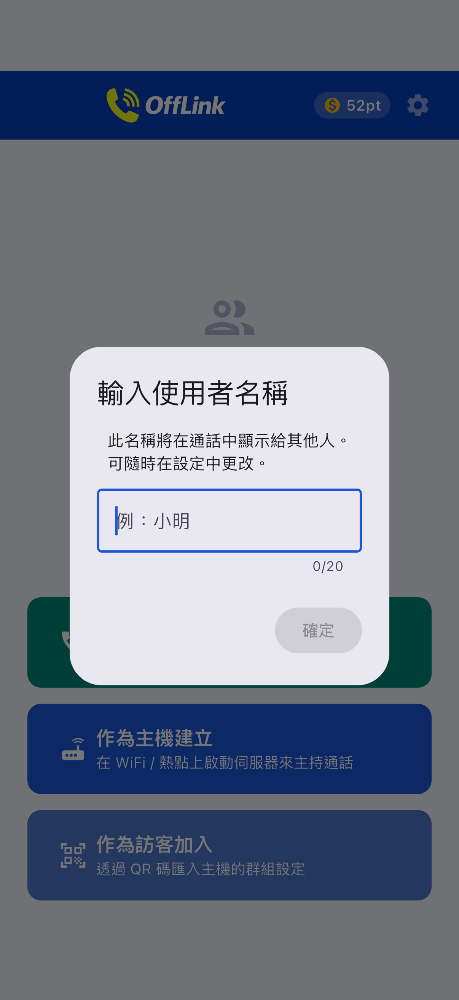
| 方法 | 操作 |
|---|---|
| 📱 掃描 QR 碼 | 用相機掃描主機顯示的 QR 碼（最簡單） |
| 📋 貼上代碼 | 貼上主機透過 LINE 等分享的代碼 |
| ✏️ 手動輸入 | 直接輸入群組名稱·SSID·密碼 |
透過 QR 碼分享群組（主機端）：
主機可以點擊首頁群組卡片右側的 QR 圖示來顯示 QR 碼。

其他成員可以透過 OffLink 的「掃描 QR」功能讀取。
透過貼上代碼加入（訪客端）：
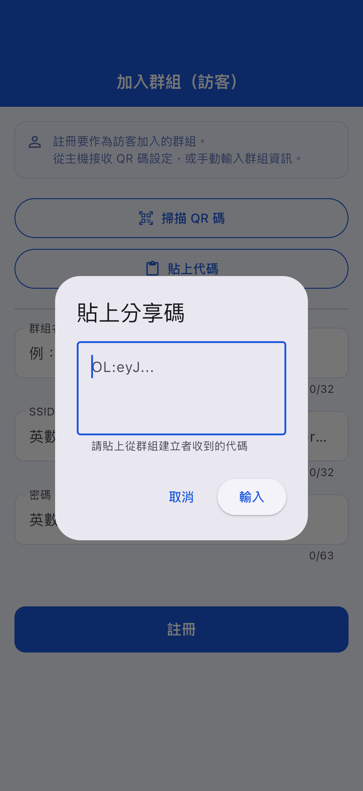
Step 3： 群組資訊自動填入後，點擊「註冊」。
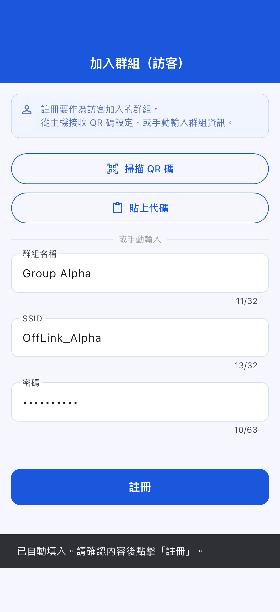
已建立或註冊的群組會儲存在首頁上。
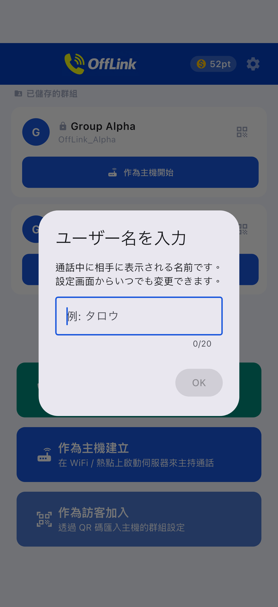
訪客端加入頁面：
輸入使用者名稱並選擇要加入的群組。
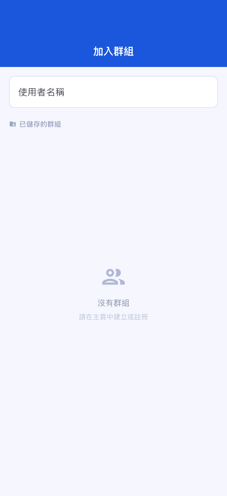
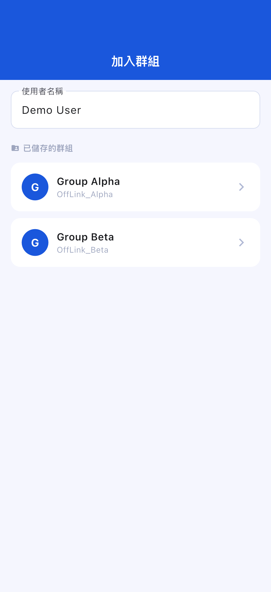
待命頁面：
主機啟動伺服器後，待命頁面會顯示等待連線的狀態。
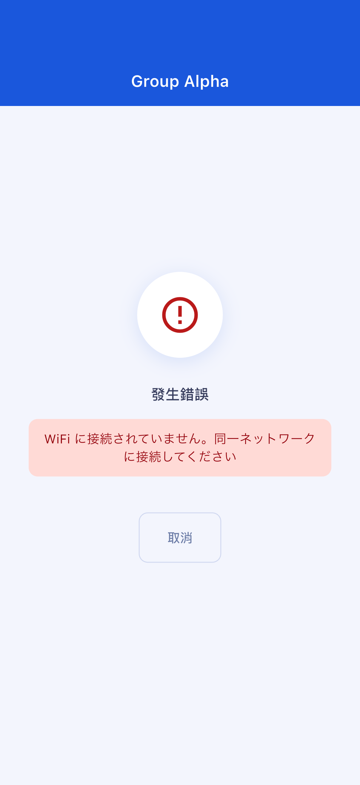
通話頁面：
連線完成後自動跳轉到通話頁面。
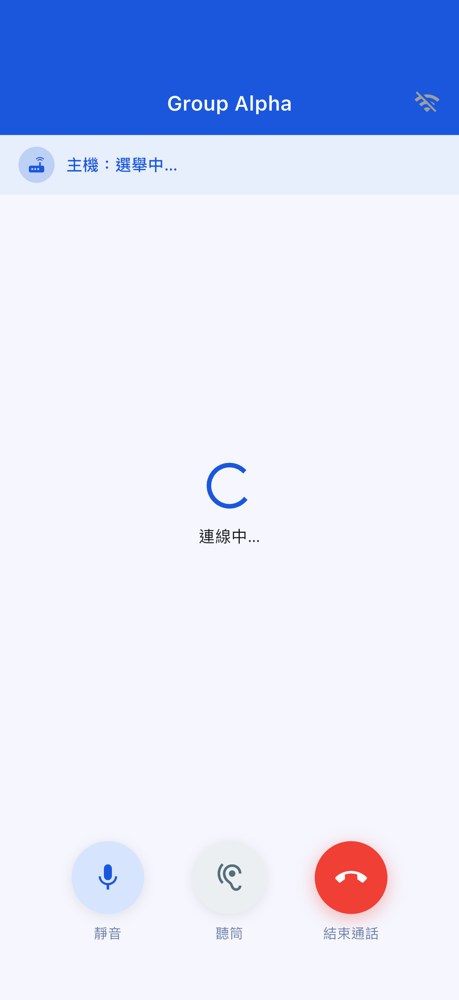
通話頁面操作：
| 按鈕 | 功能 |
|---|---|
| 🎤 靜音 | 開啟/關閉自己的麥克風 |
| 🔊 音訊輸出切換 | 在揚聲器 / Bluetooth / 聽筒之間切換 |
| 🔴 結束通話 | 退出通話 |
開始通話需要點數。點數可以透過觀看獎勵廣告獲得。
| 層級 | 消耗點數 | 最大參與人數 |
|---|---|---|
| Standard | 10 pt | 4 人 |
| Large | 20 pt | 10 人 |
點數不足時： 觀看獎勵廣告即可獲得 10pt。請點擊頁面上顯示的廣告觀看按鈕。
請確認以下事項：
目前版本不提供從 OffLink 內自動開啟熱點（WiFi 熱點分享）的功能。 如需使用熱點分享，請手動在 Android 裝置的設定應用程式中開啟熱點功能，然後讓所有人連線到該網路。
請確認以下事項：
請確認以下事項：
應用程式會彈出引導您前往設定頁面的對話框。請前往裝置的設定 → 應用程式 → OffLink → 權限，將所需權限變更為「允許」。
| 項目 | 限制內容 |
|---|---|
| 最大參與人數 | Standard: 4人 / Large: 10人 |
| 通話方式 | 僅限同一 WiFi 網路（WiFi 區域網路）內 |
| 背景執行 | 可能因裝置型號及系統版本不同而受限 |
| 群組儲存上限 | Free 使用者最多 5 個群組（Premium 無限制） |
| 項目 | 建議配置 |
|---|---|
| Android | Android 5.0 及以上（API 21+） |
| iOS | iOS 13.0 及以上 |
| 電池電量 | 建議 80% 以上（主機裝置電池消耗較大） |
| 可用儲存空間 | 100MB 以上 |
| WiFi 環境 | 路由器 / 熱點分享 / 隨身 WiFi 等可連線同一網路的環境 |